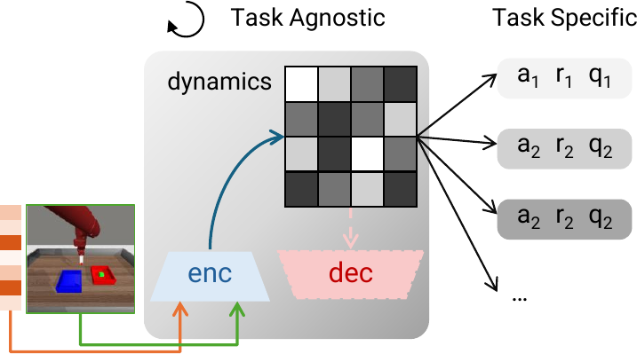
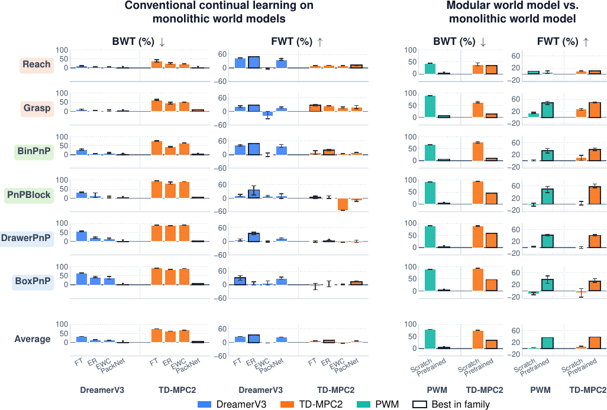
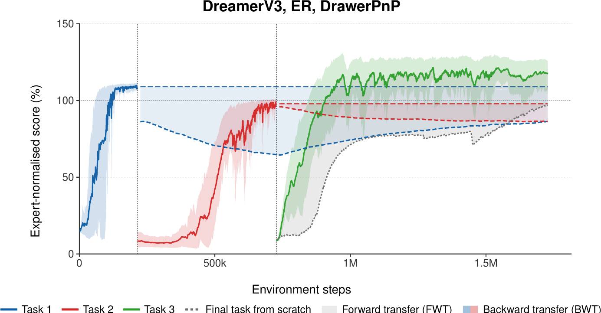
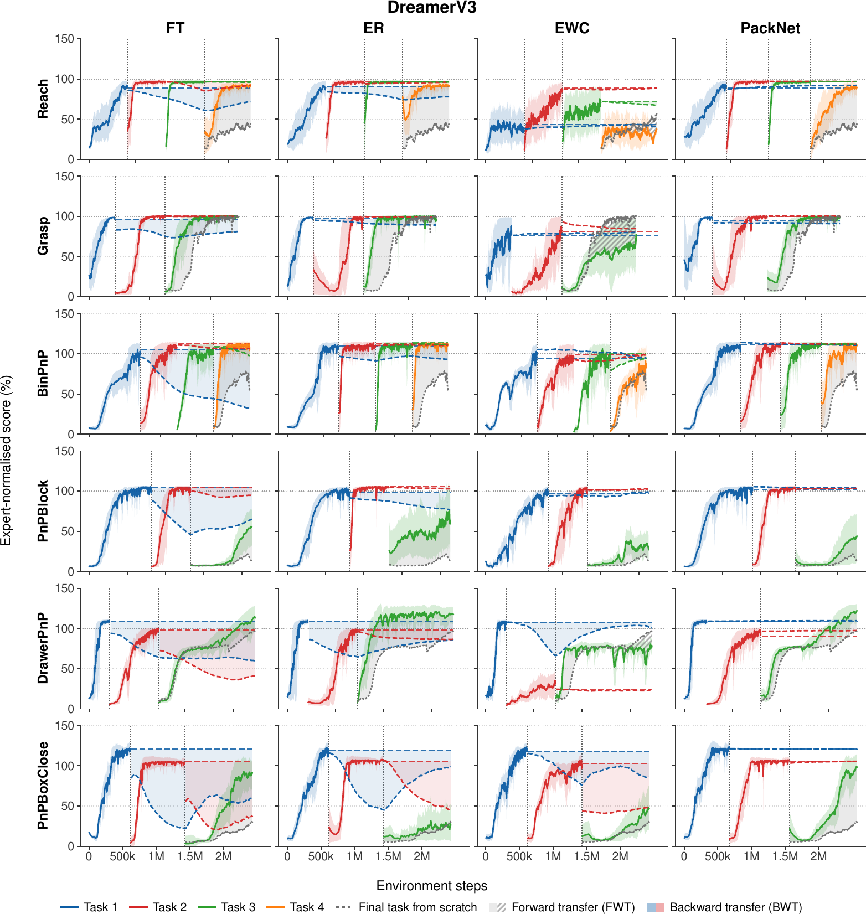
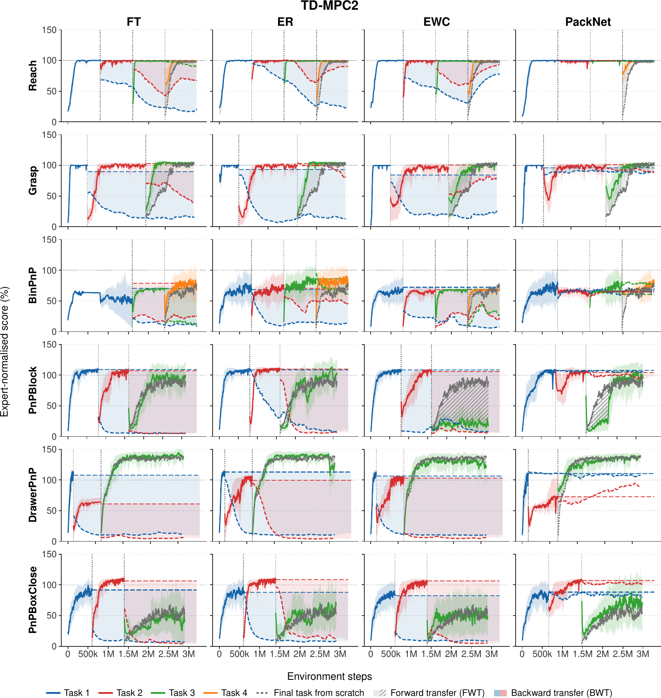
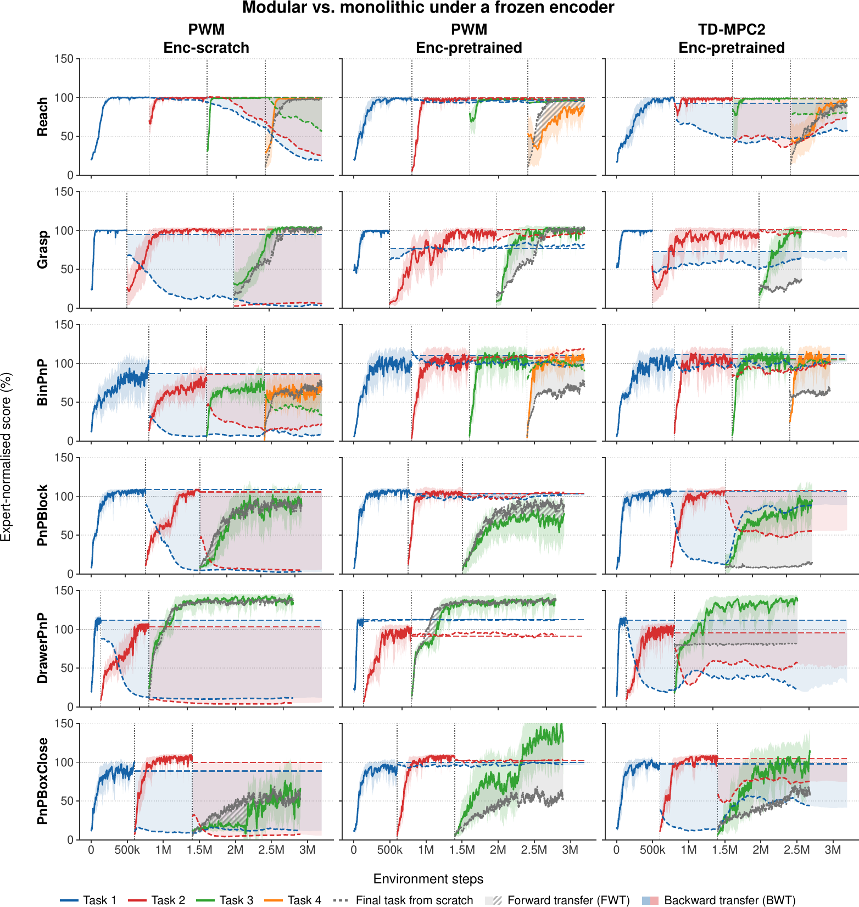

A desirable property of a world model is the ability to learn continually across tasks, adapting to new environments without forgetting what it has already learnt. In particular, the ability to retain and reuse knowledge obtained from prior experiences underpins an agent's ability to efficiently adapt to novel environments, as the dynamics of the physical world can often be described in reoccurring mechanisms. Their measure of adaptation, however, entangles two abilities: the speed and capacity to learn unseen tasks, and the reuse of knowledge already acquired, because incoming tasks always carry novel content alongside what recurs. In order to isolate knowledge reuse from prior experiences, we propose a compositional continual learning benchmark for world models in robot manipulation. Specifically, we design each task curriculum to end with a compositional task built by recombining all primitives that precede it in the sequence. We further factorise this composition along the axes of action and perception to better understand how different input modalities bottleneck knowledge reuse. We evaluate state-of-the-art world models under canonical continual learning methods, alongside a modular world model whose dynamics backbone contains explicitly reusable components. Results show that modularity balances reuse against forgetting better than conventional methods, but none solve the problem fully, leaving clear room for continual world models built to reuse without forgetting.
At each step, a world model takes two inputs: an action given to it for the current step, and current perception, which in our case consists of image observations and proprioception. The dynamics it must learn are therefore conditioned on both. This view motivates the central design choice of our task suites: we compose primitive skills along these two input modalities, yielding three suite types.
We build our benchmark on top of Meta-World, whose 50 monolithic tasks provide the assets and environment we work with, and construct six composition task suites in total.
| Suite | Primitive task curriculum | Composition task |
|---|---|---|
| Action composition | ||
| Reach | reach in $xy$ → reach in $xz$ → reach in $yz$ | reach in $xyz$ |
| Grasp | pick cube → place cube | pick and place cube |
| Perception composition | ||
| BinPnP | pick cube from yellow bin to purple bin → yellow to red → blue to purple | blue bin to red bin |
| PnPBlock | pick and place red block → pick and place blue block | stack the two blocks |
| Full composition | ||
| DrawerPnP | pick and place cube → open drawer | open drawer then pick and place cube inside |
| PnPBoxClose | pick and place cube → close box | pick and place cube inside box then close it |
The six composition task suites. Primitives are trained in the listed order, and each suite ends with a composition task built only from the primitives preceding it.
A world model naturally partitions into two groups by semantic role. The task-agnostic components capture how the world evolves and how observations are generated, and should be independent of any specific task. The task-specific components consume the latent representation produced by the task-agnostic components to decide what the robot should do, and depend entirely on the task definition.
This partition is consequential for how we apply continual learning. When a new task arrives, the novel observations and interactions must be absorbed by the task-agnostic backbone continually. The task-specific heads are private to each task and are simply re-initialised when the curriculum advances, because very different tasks can be defined under the same environment and dynamics, each with its own reward and optimal behaviour.

World model separation for continual learning. The task-agnostic part (left: encoder, dynamics, and decoder if present) captures how the world evolves and is the only part learnt continually across the curriculum. The task-specific heads (right: reward, actor, critic) consume its latent and are re-initialised for each new task.
We evaluate three world-model families under the model-based reinforcement learning view: DreamerV3 and TD-MPC2 as monolithic baselines, and Prismatic World Model (PWM) as our modular baseline. On the monolithic backbones we apply four continual learning paradigms to the task-agnostic part: naive fine-tuning (FT), experience replay (ER), elastic weight consolidation (EWC), and PackNet. For PWM we build a continual variant that adds $K = 3$ new dynamics experts per task while freezing the experts of previous tasks, so the router can reuse previously learnt dynamics while still introducing new capacity. To isolate what the modular design contributes from encoder drift, we also pretrain the PWM encoder with an autoencoder reconstruction objective on expert demonstrations, freeze it, and give the exact same encoder checkpoint to monolithic TD-MPC2 for comparison.

Continual learning performance on all six task suites. Task suites are shaded by composition type. BWT is lower-is-better and FWT higher-is-better, black outlines mark the best method within a backbone. Left: the monolithic backbones DreamerV3 (blue) and TD-MPC2 (orange) under four continual learning methods. Right: modular PWM (teal) against monolithic TD-MPC2 (orange), with a scratch or a pretrained frozen encoder. Bars show the mean over three random seeds with minimum and maximum scores indicated.
DreamerV3 outperforms TD-MPC2. Under naive fine-tuning and all three conventional continual learning methods, DreamerV3 consistently outperforms TD-MPC2 on both BWT and FWT. We attribute this to DreamerV3's generative reconstruction objective, which encourages its latent to encode the scene more broadly than the current task alone requires. TD-MPC2 is decoder-free by design and shapes its latent only through latent consistency, reward prediction and temporal-difference learning, none of which requires the representation to retain scene detail the current task does not use.
Difficulty rises along the composition axis. Backward transfer follows the ordering of the three composition types on both backbones, 5.94 to 11.79 to 30.12 on DreamerV3 and 32.15 to 57.81 to 68.68 on TD-MPC2. Forward transfer separates the two at the perception axis, where DreamerV3 holds at 24.52 and TD-MPC2 drops to −1.88. Recombining actions under a familiar scene is the simplest case since the visual representations move little. A shift in perception challenges the visual encoder and the dynamics backbone at once, and only DreamerV3 absorbs it. Full composition compounds both.
| Backbone | Action | Perception | Full | |||
|---|---|---|---|---|---|---|
| BWT↓ | FWT↑ | BWT↓ | FWT↑ | BWT↓ | FWT↑ | |
| DreamerV3 | 5.94 | 21.56 | 11.79 | 24.52 | 30.12 | 15.54 |
| TD-MPC2 | 32.15 | 16.76 | 57.81 | −1.88 | 68.68 | 1.54 |
Performance by composition axis. BWT↓ and FWT↑ grouped by composition type, each averaged over all four continual learning methods and both task suites of that modality.
Conventional methods trade forward transfer against backward transfer. No conventional method achieves both, each sits at a different point along the same trade-off. Fine-tuning is second only to ER in forward transfer, but with no forgetting prevention the parameters it reads are the ones it writes, giving the worst backward transfer. ER preserves what fine-tuning reuses and gives the best forward transfer of all, at roughly half fine-tuning's forgetting; the drift is only slowed rather than stopped, and the buffer grows unbounded. EWC can neither move the protected parameters to recombine them nor fall back on free capacity to reuse them from the outside, making it the weakest method here. PackNet comes closest because freezing is paired with a pathway for reusing: it drives forgetting near zero while retaining competitive forward transfer, but model capacity shrinks along the sequence and pruning allocates a fixed fraction per task, making it the only method that bounds the curriculum length in advance.
Explicit modularity pushes the frontier further. PWM preserves reusable components and enables reuse of them through an explicit architectural structure on the dynamics model. Under our frozen encoder diagnostic, PWM reaches BWT 3.85 and FWT 36.18 against TD-MPC2's 34.97 and 38.11, nearly eliminating forgetting while matching how fast TD-MPC2 learns the composition task under fine-tuning. Unlike PackNet, this combining capacity is added with each task rather than carved from a shrinking pool, making it more scalable. However, without the privileged frozen encoder, PWM loses both the ability to retain or reuse. Furthermore, what PWM buys is the retention axis while leaving reuse where the monolithic model already had it.

The two metrics on a representative run. Solid traces show each task while it is being trained, dashed traces show the evaluation afterwards, and the dotted grey trace shows the final composition task learnt from scratch. Each shaded region is the numerator of one metric. Backward transfer: for every earlier task, the region between its end-of-training level $C_i$ and its later evaluation curve, which we express as a fraction of the rectangle of width $b_N - b_i$ and height $C_i - f$ that encloses it. Forward transfer: on the final task only, the region between the sequential curve and the scratch curve, positive where the curriculum helps and negative where it hurts.
Let a curriculum contain $N$ tasks trained sequentially, and let $b_i$ be the global step at which training of task $i$ ends. Let $R_i(s)$ be the expert-normalised return of task $i$ at step $s$, where $f = 0$ is the failure floor and $100$ is a privileged, state-based scripted oracle policy reference. Scores are not capped above, so a model that outperforms the reference policy takes values above 100. Define $C_i = R_i(b_i)$ as the task's performance when its own training ends. Evaluation is run at a fixed checkpoint interval, so each integral is computed by the trapezoidal rule over those checkpoints, and all curves are averaged over three random seeds before a metric is applied.
Backward transfer. For every non-final task, we take the shaded region between $C_i$ and the task's evaluation curve, and express it as a fraction of the rectangle enclosing it:
$$ D_i = \frac{\displaystyle\int_{b_i}^{b_N} \max\!\left(0,\, C_i - R_i(s)\right) \mathrm{d}s} {\left(b_N - b_i\right)\left(C_i - f\right)} \times 100. $$
The clipping at 0 means later gains do not offset earlier losses, so $D_i$ lies in $[0, 100]$: 0 if the curve never drops after training, 100 if it collapses to the floor immediately and stays there. The normalisation requires $C_i > f$, which means a task must end with non-zero performance. If a task is never learnt, it holds nothing that could be forgotten and backward transfer calculation is excluded. Averaging over the tasks that were learnt yields the backward transfer score for this task suite, lower is better:
$$ \mathcal{I} = \left\{\, i < N : C_i > f \,\right\}, \qquad \mathrm{BWT} = \frac{1}{|\mathcal{I}|} \sum_{i \in \mathcal{I}} D_i. $$
Note that our BWT is a forgetting score in $[0, 100]$, and so is not the same quantity as the backward transfer introduced in Lopez-Paz and Ranzato (2017), which subtracts a task's original performance from its final performance and is higher-is-better. Theirs compares two data points; ours integrates over the whole remaining curriculum.
Forward transfer. Forward transfer is measured only on the final composition task to examine the reusing ability of the models. Let $R_N^{\mathrm{seq}}(t)$ be its learning curve during its position in the curriculum, rebased to $t = 0$, and let $R_N^{\mathrm{scr}}(t)$ be the curve obtained when learning the same task from scratch with no preceding primitives. With a shared learning step $T$, FWT is the shaded region between them divided by the learning length:
$$ \mathrm{FWT} = \frac{1}{T} \int_{0}^{T} \left( R_N^{\mathrm{seq}}(t) - R_N^{\mathrm{scr}}(t) \right) \mathrm{d}t. $$
This is higher-is-better. Because the curves are compared over the whole budget rather than at a fixed threshold, FWT rewards learning the composition task faster and learning it better.
The tables below give the per-suite values underlying the aggregate discussion above. Suites are listed in the order of the task suite table, grouped by composition type.
| Suite | FT | ER | EWC | PackNet | ||||
|---|---|---|---|---|---|---|---|---|
| BWT↓ | FWT↑ | BWT↓ | FWT↑ | BWT↓ | FWT↑ | BWT↓ | FWT↑ | |
| DreamerV3 | ||||||||
| Reach | 11.77 | 43.91 | 5.68 | 49.42 | 7.22 | −2.25 | 0.67 | 36.95 |
| Grasp | 10.07 | 21.28 | 5.07 | 26.71 | 4.62 | −20.26 | 2.43 | 16.71 |
| BinPnP | 29.27 | 42.09 | 6.46 | 49.26 | 8.36 | 0.90 | 1.57 | 38.00 |
| PnPBlock | 31.80 | 11.64 | 11.80 | 36.37 | 4.36 | 8.74 | 0.71 | 9.20 |
| DrawerPnP | 56.15 | 7.06 | 21.90 | 35.52 | 13.92 | −1.65 | 0.20 | 13.45 |
| PnPBoxClose | 65.75 | 31.12 | 43.22 | 3.99 | 39.20 | 6.01 | 0.63 | 28.86 |
| Average | 34.14 | 26.18 | 15.69 | 33.55 | 12.95 | −1.42 | 1.04 | 23.86 |
| TD-MPC2 | ||||||||
| Reach | 38.14 | 10.47 | 25.38 | 12.07 | 23.09 | 10.35 | 0.77 | 12.94 |
| Grasp | 62.62 | 27.17 | 46.70 | 24.74 | 51.54 | 17.27 | 8.98 | 19.04 |
| BinPnP | 77.16 | 10.50 | 44.61 | 19.69 | 64.46 | 5.18 | 3.84 | 9.73 |
| PnPBlock | 94.89 | 2.51 | 82.79 | 2.39 | 90.20 | −54.28 | 4.56 | −10.73 |
| DrawerPnP | 89.59 | 1.07 | 88.51 | 1.81 | 91.65 | −3.53 | 4.10 | −0.17 |
| PnPBoxClose | 93.07 | −6.27 | 85.48 | 3.19 | 90.16 | 3.21 | 6.90 | 13.04 |
| Average | 75.91 | 7.57 | 62.25 | 10.65 | 68.52 | −3.63 | 4.86 | 7.31 |
Continual learning performance of monolithic world models. Underline marks the better backbone (DreamerV3 or TD-MPC2) for that method and suite. Bold marks the best method within a backbone. Values are means over three random seeds.
| Suite | Scratch encoder | Pretrained frozen encoder | ||||||
|---|---|---|---|---|---|---|---|---|
| PWM | TD-MPC2 | PWM | TD-MPC2 | |||||
| BWT↓ | FWT↑ | BWT↓ | FWT↑ | BWT↓ | FWT↑ | BWT↓ | FWT↑ | |
| Reach | 44.45 | 9.35 | 38.14 | 10.47 | 2.47 | 5.84 | 35.07 | 10.64 |
| Grasp | 90.73 | 14.49 | 62.62 | 27.17 | 5.69 | 48.29 | 13.80 | 49.44 |
| BinPnP | 66.97 | 1.88 | 77.16 | 10.50 | 6.65 | 34.30 | 10.27 | 37.50 |
| PnPBlock | 92.36 | −3.21 | 94.89 | 2.51 | 3.99 | 50.02 | 45.36 | 58.38 |
| DrawerPnP | 90.81 | 2.01 | 89.59 | 1.07 | 1.64 | 41.02 | 59.06 | 40.22 |
| PnPBoxClose | 89.95 | −10.09 | 93.07 | −6.27 | 2.68 | 37.62 | 46.24 | 32.51 |
| Average | 79.21 | 2.41 | 75.91 | 7.57 | 3.85 | 36.18 | 34.97 | 38.11 |
Modular PWM against monolithic TD-MPC2. Bold marks the better backbone (PWM or TD-MPC2) for that suite under the same encoder choice. Values are means over three random seeds.
The figures below give the learning curves for every suite and method. Solid coloured traces show sequential training, dashed traces show task evaluation after each switch, and grey shows final-task evaluation from scratch. Shading with different colours corresponds to the FWT and BWT regions defined in Appendix A. Vertical dotted lines mark task switches. The training budget per task is set by the steps a from-scratch run needs to converge, and therefore differs across backbones. Both metrics are normalised over the interval they integrate, so scores remain comparable across these budgets.

Complete DreamerV3 learning curves across six task suites and four continual-learning methods.

Complete TD-MPC2 learning curves across six task suites and four continual-learning methods.

The frozen-encoder comparison across all six task suites: PWM with a scratch encoder, PWM with the pretrained frozen encoder, and monolithic TD-MPC2 with the same pretrained frozen encoder. The middle and right panels differ only in whether the dynamics model is explicitly modular, and are the pair our frozen-encoder diagnostic compares. TD-MPC2 with a scratch encoder can be found in the first column of the TD-MPC2 figure above.